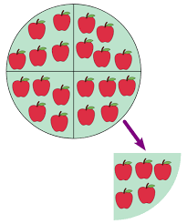

Esta disponible y gratis :) una plantilla de Excel que sirve para calcular los intereses de un préstamo corporativo
descargar plantilla de exel para prestamos
Tambíen vamos a ofrecer una serie de consejos aplicables a cualquier empresa basados en los principio de Henri Fayol el padre de la administración
consejos y sugerencias
| División del trabajo: |
 |
Analiza las funciones y responsabilidades de cada departamento y empleado.
Divide las tareas en unidades más pequeñas y asigna a cada individuo aquellas en las que puedan especializarse. |
| Autoridad y responsabilidad: |
|
Establece claramente quién tiene la autoridad para tomar decisiones en cada nivel jerárquico.
Asigna responsabilidades específicas a cada empleado de acuerdo con su posición y función en la organización. |
| Disciplina |
|
Implementa políticas y normas claras que todos los empleados deben seguir.
Asegúrate de que haya consecuencias claras para el incumplimiento de las normas establecidas. |
| Unidad de mando: |
|
Cada empleado debe recibir instrucciones y ser supervisado por un solo superior para evitar confusiones y conflictos. |
| Unidad de dirección: |
|
Comunica claramente la visión, misión y objetivos de la empresa para asegurar que todos trabajen hacia un mismo fin.
Coordina los esfuerzos de todos los departamentos para alinearlos con los objetivos organizacionales. |
| Subordinación del interés individual al interés general: |
|
Fomenta un ambiente de trabajo colaborativo donde se valoren los objetivos de la empresa por encima de los individuales.
Reconoce y premia el trabajo en equipo y la contribución al logro de los objetivos comunes. |
| Remuneración: |
|
Establece sistemas de compensación justos y equitativos que reconozcan el desempeño y la contribución de los empleados.
Asegúrate de que la remuneración esté en línea con el mercado laboral y sea percibida como justa por los empleados. |
| Centralización: |
|
Decide el nivel adecuado de centralización en la toma de decisiones, considerando la naturaleza y la complejidad de las actividades de la empresa.
Delega autoridad a niveles inferiores cuando sea apropiado, pero retén el control sobre las decisiones estratégicas importantes. |
| Jerarquía: |
|
Establece una estructura organizativa clara con niveles de autoridad definidos.
Asegúrate de que haya una clara cadena de mando para facilitar la comunicación y la toma de decisiones. |
| Orden: |
 |
Organiza los recursos materiales y humanos de manera eficiente para optimizar la productividad.
Mantén los espacios de trabajo limpios y ordenados para facilitar la eficiencia y la seguridad. |